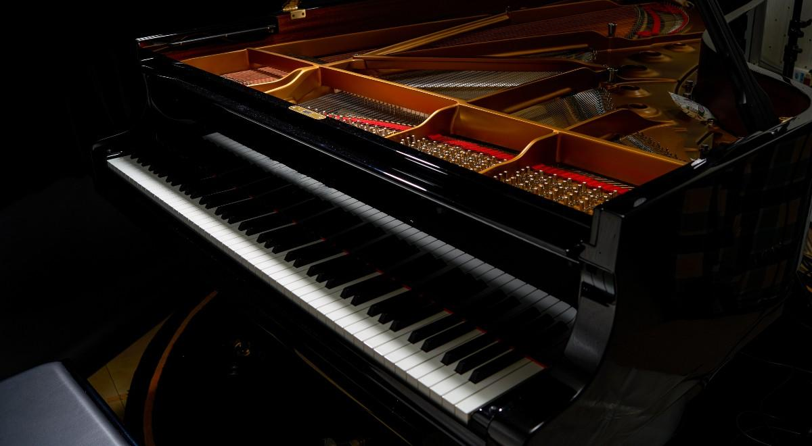
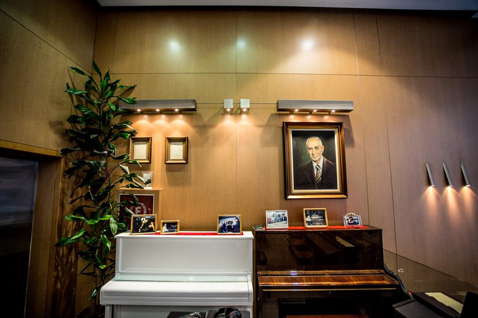
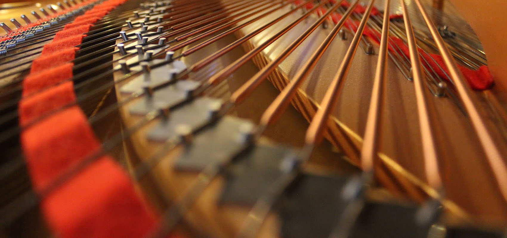
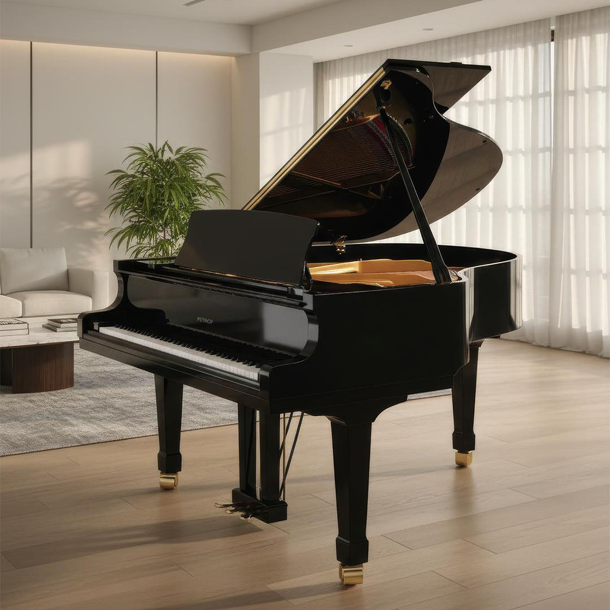
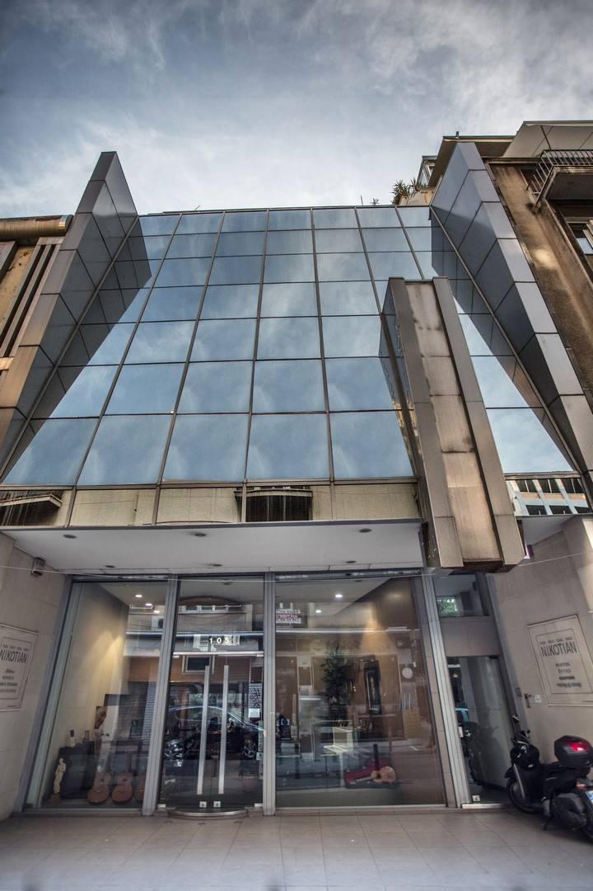

Μουσικός Οίκος Nikotian · Από το 1929
Μια ζωή αφιερωμένη στο πιάνο.
Μια οικογενειακή ιστορία σχεδόν ενός αιώνα, με το πιάνο πάντα στο επίκεντρο. Με γνώση, φροντίδα και αγάπη για κάθε όργανο.
Ο Οίκος
Μια ιστορία που συνεχίζεται
Η Nikotian ξεκίνησε στην Αθήνα το 1929 και μένει από τότε στην ίδια οικογένεια.
Κάθε γενιά παραδίδει στην επόμενη ό,τι ξέρει για το πιάνο: πώς ακούγεται, πώς φτιάχνεται, πώς κρατά τη φωνή του με τα χρόνια.
Αυτή η γνώση παραμένει ζωντανή μέχρι σήμερα, περνώντας από γενιά σε γενιά και διαμορφώνοντας τη σχέση του Οίκου με κάθε πιάνο.

- 1929 Η αρχή Ο Κάρλο Νικοτιάν ιδρύει τον Οίκο στην οδό Ακαδημίας 63.
- 1978 Μεγάλη συνεργασία Ξεκινά η συνεργασία με τον κατασκευαστή πιάνων Young Chang.
- 2000–2008 Η επόμενη γενιά Ο Κάρολος και ο Ρομπέρ εντάσσονται σταδιακά στον Οίκο.
- Σήμερα Η ιστορία συνεχίζεται Η έκθεση της Nikotian βρίσκεται στη Σόλωνος 105, στην Αθήνα.

Τεχνογνωσία
Η γνώση πίσω από κάθε πιάνο
Ένα πιάνο δεν τελειώνει τη μέρα που φτάνει στο σπίτι σας. Αλλάζει με τον χρόνο, την υγρασία και τη χρήση. Γι’ αυτό το φροντίζουμε και μετά.
-
Χόρδισμα & συντήρηση
Τακτική φροντίδα, ώστε το πιάνο να κρατά τον ήχο του.
-
Επισκευές & τεχνική φροντίδα
Επισκευές και ρυθμίσεις του μηχανισμού.
-
Ενοικίαση, μεταφορά & εκτίμηση
Ενοικίαση πιάνου, μεταφορά και εκτίμηση, κατόπιν συνεννόησης.
Μια επιλογή προσωπική
Το πιάνο που σας ταιριάζει.
Κάθε πιάνο έχει τον δικό του χαρακτήρα. Ο χώρος, η εμπειρία και ο τρόπος που παίζει κανείς είναι μερικά μόνο από όσα αξίζει να σκεφτεί πριν επιλέξει. Στη Nikotian, η επιλογή ξεκινά με την προσωπική επαφή με το όργανο.
Ακούστε το. Παίξτε το. Νιώστε το.

Οι συλλογές μας
Κάθε πιάνο, ένας δικός του κόσμος.
Όρθια και με ουρά, καινούργια και μεταχειρισμένα. Όποιο σας ενδιαφέρει, μπορείτε να το ακούσετε και να το παίξετε στην έκθεση.
Διαθέτουμε και ηλεκτρικά πιάνα
Μια άλλη μουσική φωνή
Κλασικές κιθάρες
Δίπλα στα πιάνα, μια μικρή επιλογή κλασικών κιθάρων Juan Hernandez και Azahar.
Δείτε τις κιθάρεςΗ έκθεση
Η μουσική από κοντά.
Η επιλογή ενός πιάνου είναι μια εμπειρία που αξίζει να ζήσει κανείς από κοντά. Στην έκθεση της Nikotian, κάθε όργανο μπορεί να ακουστεί, να δοκιμαστεί και να ανακαλυφθεί με τον δικό του ρυθμό.
- Διεύθυνση
- Σόλωνος 105,
106 78 Αθήνα - Σταθερό τηλέφωνο
- 210 380 8836
- info@nikotian.gr
- Κινητό τηλέφωνο
- 697 203 4883

